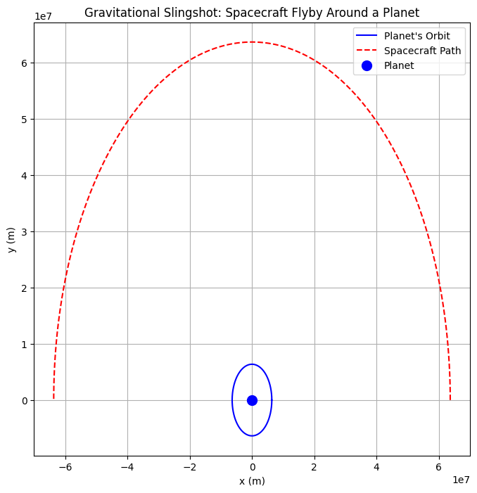
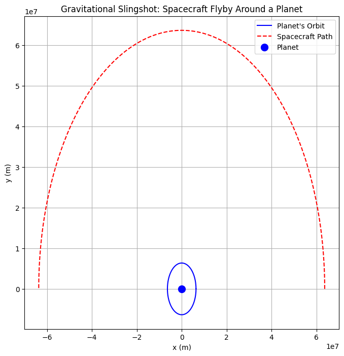

Problem 1
Problem 1: Orbital Period and Orbital Radius (Kepler's Third Law)
1. Theoretical Foundation
Kepler’s Third Law
Kepler’s Third Law states that for any two bodies in orbit around a common center of mass:
where:
- \( T \) is the orbital period (time for one complete revolution),
- \( R \) is the orbital radius (distance from the central mass),
- The proportionality depends on the central mass \( M \) and the gravitational constant \( G \).
For a body in a circular orbit around a massive central body (e.g., a planet around the Sun), the centripetal force is provided by gravity:
Since orbital velocity is:
Substituting \( v \) into the force equation:
Rearranging for \( T \):
which confirms the cubic relationship. The constant of proportionality is:
2. Implications in Astronomy
Applications of Kepler’s Law
- Determining planetary masses: By measuring the orbital period and radius of a planet’s moon, we can estimate the planet’s mass.
- Measuring distances in space: If the period is known, the distance can be calculated.
- Satellite Orbits: Engineers use this law to place satellites in stable orbits.
Real-World Examples
- Moon’s orbit around Earth:
[ T = 27.32 \text{ days}, \quad R \approx 384,400 \text{ km} ] - Earth’s orbit around the Sun:
[ T = 365.25 \text{ days}, \quad R \approx 149.6 \text{ million km} ] - Jupiter’s Moons: The orbital radii and periods of Io, Europa, and Ganymede follow the \( T^2 \propto R^3 \) rule.
3. Computational Model: Simulating Circular Orbits
We will simulate the motion of a planet around a star using Newton’s gravitational law and verify Kepler’s Third Law.
 

4. Discussion: Extensions to Elliptical Orbits
- Kepler’s Law also applies to elliptical orbits, using the semi-major axis \( a \) instead of \( R \).
- Gravitational interactions cause perturbations, slightly modifying orbits over time.
- For highly eccentric orbits, numerical simulations are required instead of simple formulas.
Conclusion
We derived Kepler’s Third Law, discussed its importance in astronomy, and verified it using a computational simulation. The relationship \( T^2 \propto R^3 \) provides a fundamental link between gravity and planetary motion.